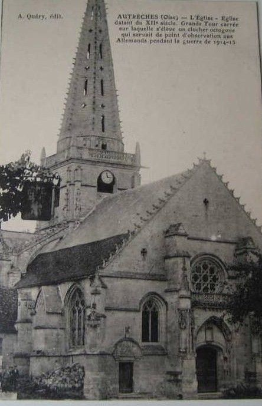
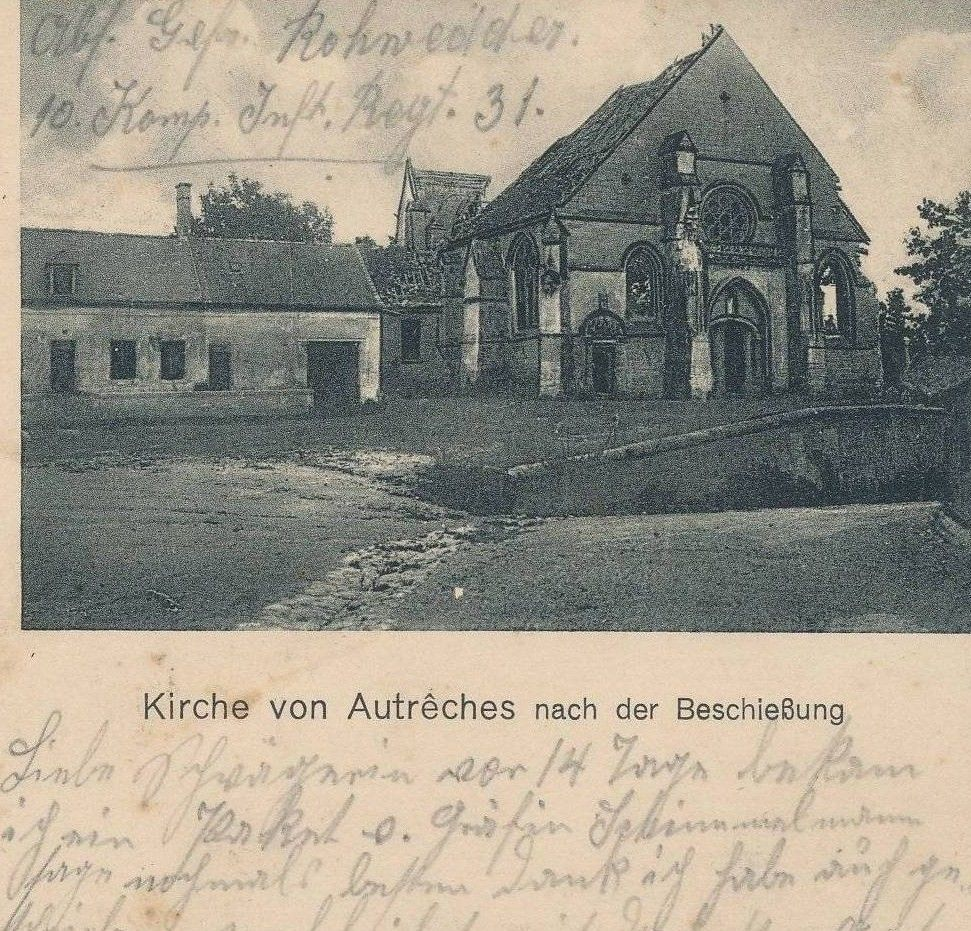

12 novembre 1914
Rappel des évènements depuis le début de la Grande Guerre :
Après la bataille des frontières, les Allemands foncent sur Paris. Le 31 août 1914, après avoir fait 40 kms dans la journée en talonnant les Ecossais du « Royal Scotch Bataillon », ils bivouaquent à Autrêches.
Mais le 11 septembre, après la bataille de la Marne, le mouvement s’inverse et c’est au tour des Allemands de refluer précipitamment, suivis de près par les Français. Ils arrêtent leur retraite le lendemain devant Morsain, au bord du plateau au sud d’Audignicourt et de Vassens.
Huit jours plus tard c’est la grande et sanglante bataille d’Autrêches : au soir du 20 septembre l’ennemi reprend Autrêches, Chevillecourt et la ferme de Saint Victor. Dans les gigantesques carrières leurs premières lignes peuvent s’abriter. Du plateau ils ont un avantage stratégique considérable car cette position leur offre un belvédère sur la vallée de l’Aisne. Au début de novembre le commandement français décide de les déloger. Les 44ème et 60ème régiments d’infanterie reçoivent la mission de progresser de part et d’autre de Saint Victor.
Le 12 novembre l’attaque est déclenchée à 8 heures ; de toute la ligne d’attaque, seule la gauche du 3ème bataillon du 60ème peut gagner quelque terrain mais comme sa droite ne suit pas, ceux qui restent reviennent sur les positions de départ : l’échec est total. L’attaque est renouvelée l’après-midi, préparée par un quart d’heure de tirs d’artillerie mais encore une fois l’attaque est brisée : dans le seul 60ème, 285 combattants sont tués, blessés ou portés disparus ; parmi eux, il y eut quelques prisonniers dont l’un d’eux, Frédéric Louvrier, a laissé un écrit détaillé de cette mémorable attaque; il fut le témoin oculaire de la destruction du clocher par l'artillerie française.
Ce récit de la journée du 12 novembre 1914 nous a été transmis son petit-fils, Charles Muckensturm. Qu’il en soit remercié une nouvelle fois !
« Avec une promptitude inespérée tout le monde s’élança, hurlant en avant ! à la baïonnette ! ce qui fût à mon avis une grande imprudence car je suis certain que, si nous étions partis sans bruit, sans crier, nous aurions surpris dans leur tranchée les Allemands en train de déjeuner avec un morceau de pain et de lard. Mais à nos cris, ils ont tout quitté et pendant qu’une partie nous tirait dessus, les autres se sauvaient de tous côtés. A notre gauche par côté se trouvait un petit bouquet de bois à la lisière de laquelle il y avait une tranchée allemande solidement abritée dans laquelle étaient braquées plusieurs mitrailleuses.
A peine avions nous fait 20 mètres, que, pris sous le feu de ces mitrailleuses, plus de la moitié des hommes de ma section tombaient comme si une même balle les eût touchés tous ensemble ; ce qui cependant n’arrêtait pas les autres, qui, affolés, continuaient leur assaut contre la tranchée à prendre.
Mais beaucoup encore restaient en route, pris sous le feu des Allemands qui n’avaient pas abandonné la tranchée et des mitrailleuses qui continuaient leur tir. Enfin ceux qui arrivaient les premiers sautaient dans la tranchée fusillant à bout portant et embrochant cruellement les nombreux Allemands qui étaient restés pour nous tirer dessus et couvrir la retraite de ceux qui se sauvaient.
Mais, de la tranchée d’avant, les Allemands s’en aperçurent et dirigèrent leur feu à l’endroit même où ils m’avaient vu bouger. J’enfilai mon fusil dans un créneau pour leur riposter et je tirai sans trop viser jusqu’au moment où je ne puis me servir de mon fusil qui s’était rempli de terre, projetée par les balles, et dont le mécanisme ne fonctionnait plus.
………….
J’avais mon sac sur le dos. Plus de 20 balles l’ont traversé. Je dis 20 pour ne pas dire davantage car je ne veux rien exagérer, toujours est-il que mon bouteillon qui était fixé sur mon sac, était criblé comme une passoire et (sur mon sac) les couvertures qui y étaient, étaient en lambeaux.
Comme je l’avais prévu, les Allemands, ne voyant plus rien bouger, allaient contre-attaquer, ce qui était facile du reste. Mais auparavant ils eurent soin de bombarder efficacement la tranchée, ce qui eut pour résultat d’achever quelques blessés et de réduire en bouillie plusieurs morts . C’est pendant le bombardement que je fus atteint par deux shrapnels, dont un sur la main gauche et l’autre sur la jambe droite.
………..
Comme une trombe, une masse de soldats allemands arrivèrent jusqu’à la tranchée derrière laquelle j’étais. J’attrapai mon fusil de ma main gauche blessée pour pouvoir me servir de la baïonnette une dernière fois si l’occasion se présentait avant de me laisser tuer. J’espérais faire payer ma vie cher, ne comptant pas du tout être fait prisonnier après une lutte aussi acharnée dans laquelle, eux aussi, avaient beaucoup de pertes …
Le premier Allemand qui m’aperçut, (je le reconnaîtrais dans un mille) me mit en joue et ne tira pas. Il s’efforça de me faire des signes et de me parler en gesticulant, mais en vain, car je ne compris pas et restais immobile. C’est grâce à un de mes camarade que j’ignorais là, qui parlant un peu allemand, s’était déjà rendu, que je pus comprendre qu’il me disait de lâcher mon arme et de lever les bras si je voulais être fait prisonnier. Je ne pris pas le temps de réfléchir, je me rendis aussitôt ne pensant pas rester prisonnier mais être fusillé sitôt après avoir interrogé.
Des soldats allemands, ceux qui nous avaient fait prisonniers, reçurent l’ordre de nous conduire à Autrêches, ce qui n’était pas chose facile, car il y avait beaucoup de danger. Nos canons 75 et même les grosses pièces tiraient sans discontinuer sur les tranchées de défense d’Autrêches. Il fallait pour ne pas risquer d’être atteint par les obus qui tombaient épais, suivre tout le temps la tranchée de défense qui était une tranchée joliment bien aménagée. Là encore, j’eus à nouveau une surprise agréable. Tous les soldats avaient quelque-chose à nous offrir et nous obligeaient d’accepter ; les uns des cigares, d’autres des dragées, d’autres encore du café ou de la boisson. C’est à ne pas y croire et c’est à peine si nous osions les regarder. C’était humiliant d’accepter, étant convaincu qu’ils voulaient tout simplement nous narguer et nous braver. Mais pas du tout, ils étaient sincères car ils avaient pitié de nous, nous voyant tous blessés, les effets remplis de sang et de boue, tous malades, blancs comme des déterrés et complètement désorientés.
Enfin nous arrivons aux premières maisons d’Autrêches. Les obus tombent de plus en plus fort. Nous ne pouvons plus avancer qu’en rampant de maison en maison le long des murs pour nous engouffrer dans une grange que les obus ne peuvent atteindre à proximité du poste de secours.

Comme dans la tranchée, les soldats nous entouraient de soins, nous offrant à manger et à fumer et nous apportant de l’eau fraîche pour boire et nous laver un peu. Mais aussitôt vinrent nous rejoindre une trentaine de soldats qui chargèrent leur fusil devant nous. Nous nous mîmes à trembler, croyant qu’ils allaient nous fusiller là. Mais ils ne s’occupèrent même pas de nous et nous repartîmes aussitôt. On fit appeler tous les blessés qui furent conduits un à un auprès des médecins qui leur firent de suite et soigneusement un premier pansement.
Les plus blessés furent conservés pour être conduits en voiture dans un hôpital et ceux qui comme moi, n’étaient que légèrement blessés, rejoignirent dans la grange ceux qui n’avaient pas de blessures du tout. Pendant environ deux heures que nous sommes restés là, les obus tombèrent comme grêle peu loin de nous, faisant tout trembler, réduisant en miettes les maisons, et c’est là que je vis le joli clocher d’Autrêches, après qu’une quantité d’obus l’eurent traversé, s’abattre avec un fracas épouvantable, les débris arrivant jusqu’à nous qui étions à cent mètres de distance »

Le clocher de l’église est tombé !
.